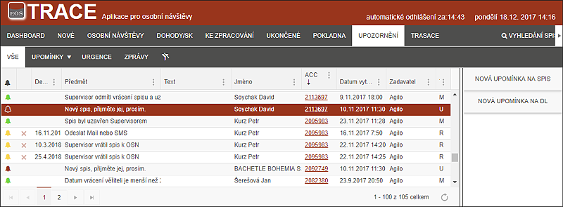

zÁLOŽKA UPOZORNĚNÍ
Záložka Trasace slouží pro celkový přehled o všech upozorněních uložených v systému konkrétního uživatele.
Na této záložce je možné rušit Připomínky (žlutě označené řádky, které mají na počátku křížek k odstranění), případně se proklikem dostat na příslušný spis. Urgence a Zprávy si zde může uživatel pouze prohlížet, ty jsou odstraněny až na základě procesu.

Uživatel zde může vytvořit i nové upomínky a to Upomínky na Spis, nebo Upomínky na Dlužníka.